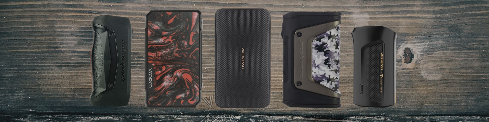
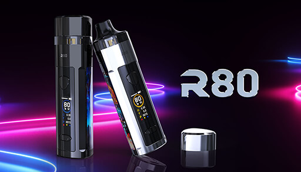

- 
- 
-


VAPOX
Se podría decir que un mod es una batería de gran capacidad a la cual se le enrosca (atornilla) un atomizador, unas de las características más destacables de este aparato es que uno puede regular el watage o voltaje que permite regular la cantidad de vapor que queremos que suelte es de uso simple ya que tiene como mínimo 3 botones los cuales son para subir y bajar el watage o voltaje y el botón sobrante es el accionador que le indica al mod que debe comenzar a soltar vapor, aparte sus baterías son intercambiables cuya cosa es raro verlo en un pod o AIO, aparte puedes ocupar distintos atomisadores (claaromizadores, RDA, RTA, etc). Este equipo solo ocupa esencias ya que los e-liquids tienen demasiada nicotina y puede causar sobredosis pero gracias al atomizador MTL se pueden ocupar sales de nicotina.


Nombre:Martin Carrera Gonzales
Curso:4°I
Fecha:22 de mayo 2020
Profesora:Aída Días
Gmail: Martincarrera128@gmail.com
Creditos
Mono Vapeador
Santivape
Talca Vapea
Smok Chile
BLK Unicorn Chile
(Pagina creada en Chile VI región Doñigue comuna de Lo Miranda sector Plazuela)
Coctáctenos en: